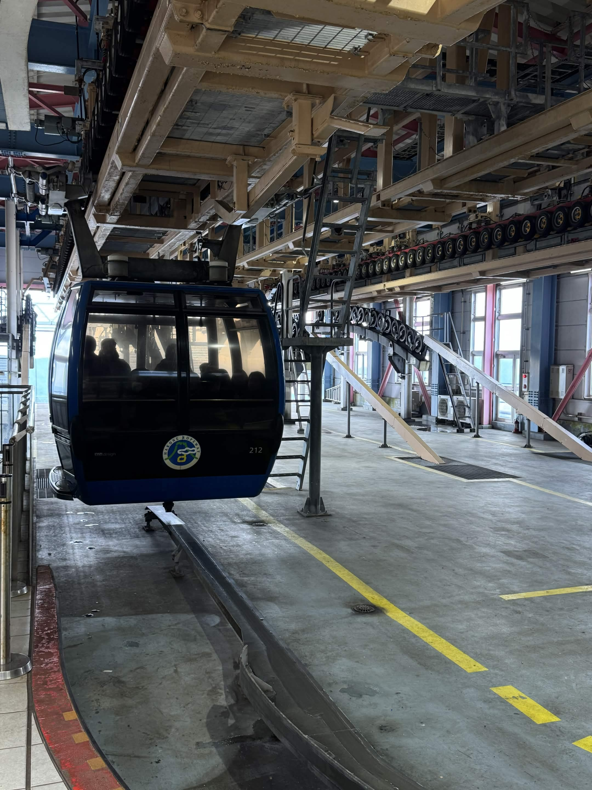
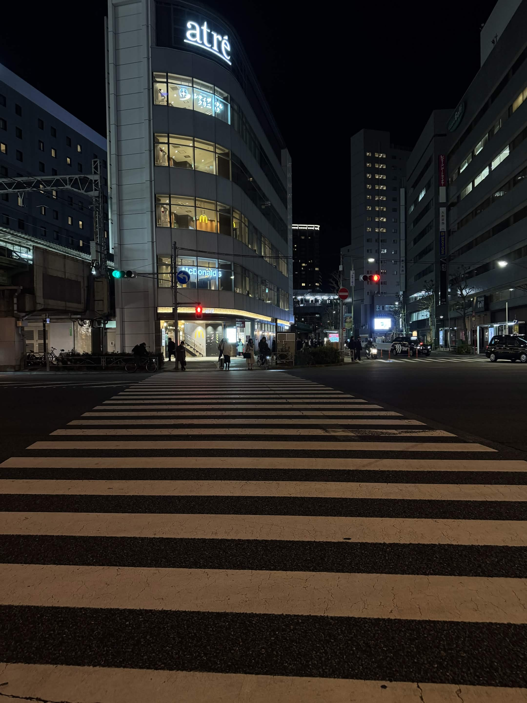
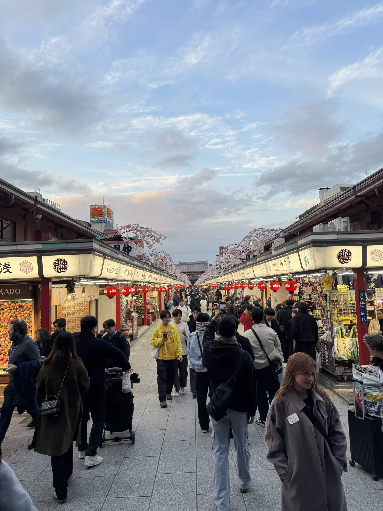
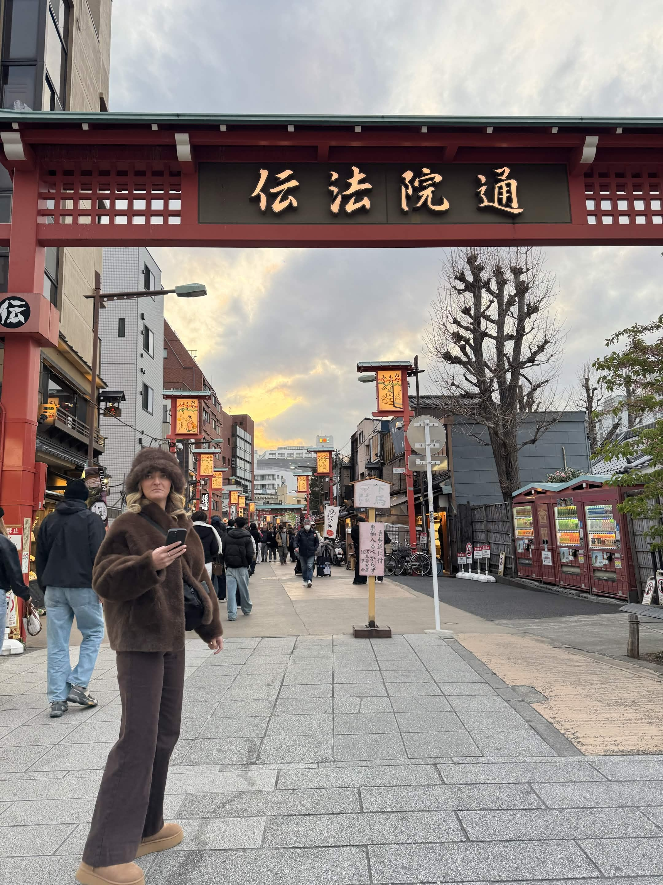

Photo Activity 03
"You'd be surprised what you notice when you're not rushing to the next spot."

Featured Photo
Most people ride the Hakone Ropeway for the view of Mount Fuji. But inside the station, there's a different kind of beauty — industrial, mechanical, quietly fascinating. The cables, the gears, the gondola easing in. Most eyes look past it. This photo looks directly at it.
More hidden moments

A quiet Tokyo crossing — beauty in stillness.

Cherry blossoms framing the path to Senso-ji.

Golden hour through the Denpoin-dori gate.